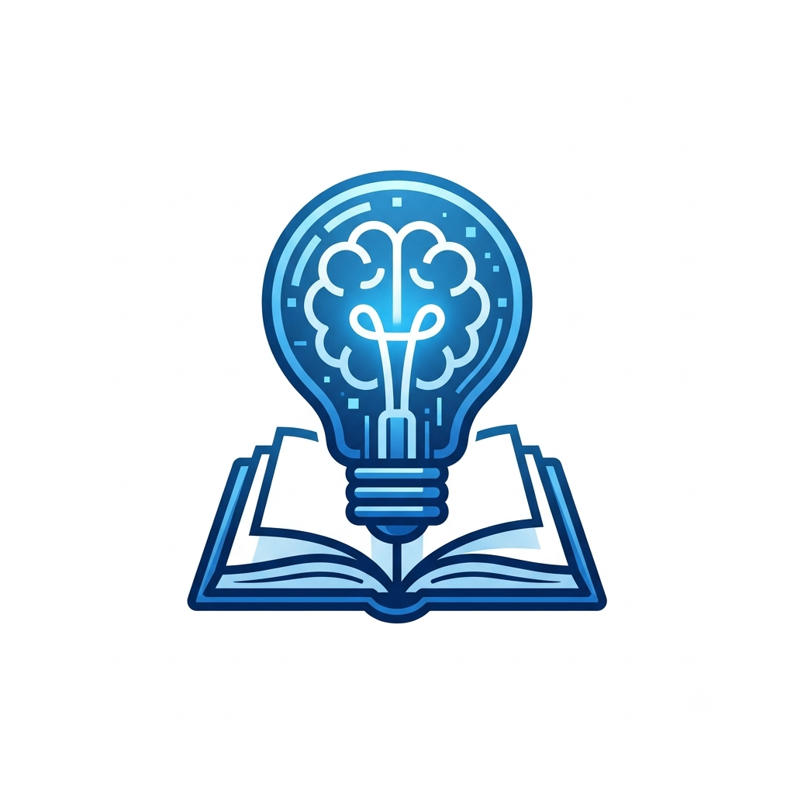
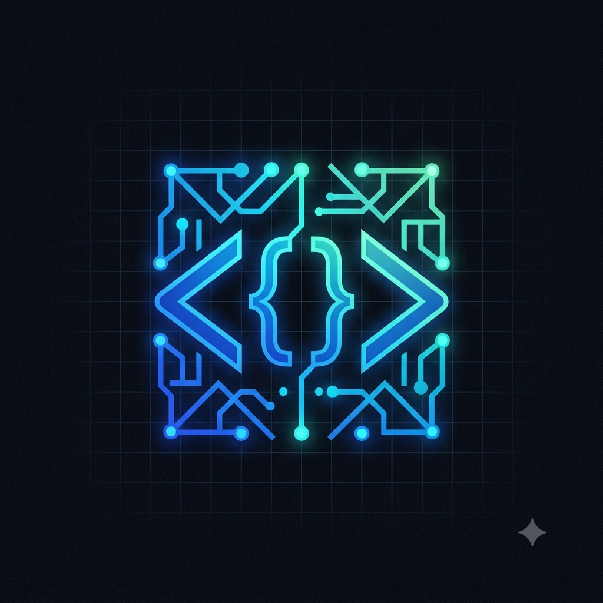

Meu primeiro post
Por: Milla Isabela
Boas-vindas ao meu novo blog! Aqui vou compartilhar dicas de programação e curiosidades da área de tecnologia.
Vou compartilhar conhecimentos sobre tecnologia e programação

Por: Milla Isabela
Boas-vindas ao meu novo blog! Aqui vou compartilhar dicas de programação e curiosidades da área de tecnologia.

Por: Milla isabela
A programação é o processo de escrever um conjunto de instruções passo a passo em uma linguagem própria para dizer a um computador ou aparelho eletrônico como realizar tarefas. É a ponte de comunicação entre o pensamento humano e a máquina. A programação serve para transformar ideias em soluções digitais, automatizar tarefas repetitivas e controlar máquinas. Ela está por trás de quase tudo o que usamos no dia a dia.
Por: Milla Isabela
Boas-vindas ao meu novo blog! Aqui vou compartilhar dicas de programação e curiosidades da área de tecnologia.